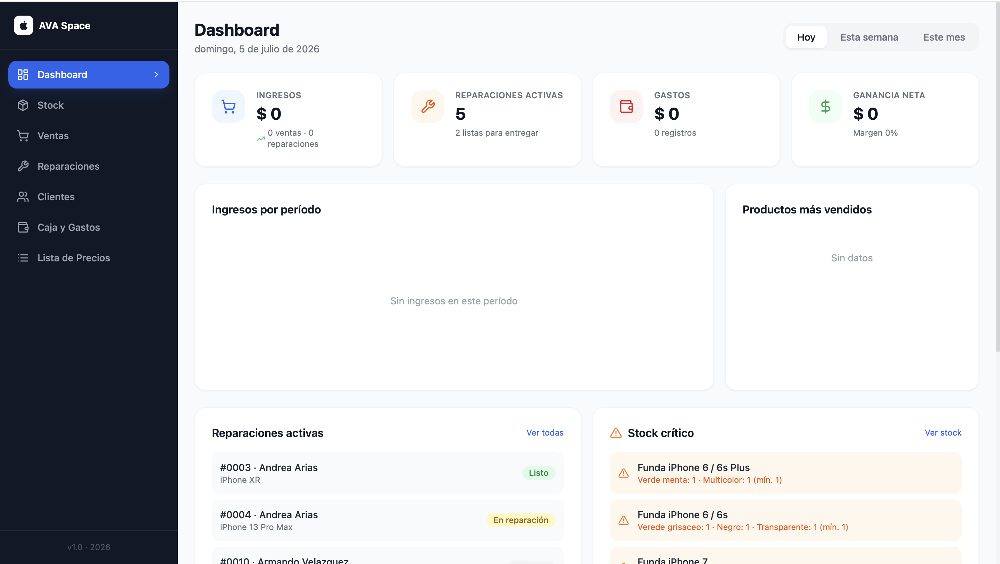
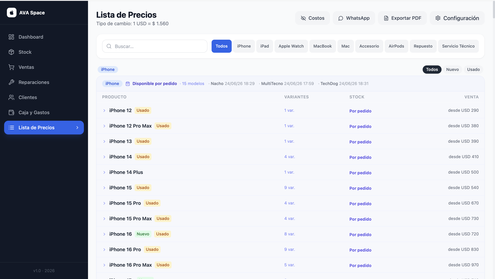

Estudio de operaciones digitales
Digital operations studio
AI Digital Assistant & Systems Operator
Organizo la operación digital de tu negocio: sistemas claros, flujos de trabajo con IA y estructura que se sostiene.
Clear systems, AI-assisted workflows, and structure that lasts — digital operations, organized.
Ver serviciosView servicesSobre mí
About
Soy Andrea, fundadora de VON AI STUDIO — un estudio de operaciones digitales orientado a orden, claridad y resultados.
Trabajo en la intersección entre organización, sistemas y tecnología. Mi enfoque: si algo se puede estructurar, se puede mejorar. Y si se puede mejorar, se puede escalar.
Ayudo a negocios y emprendedores a pasar del caos operativo a una forma de trabajar clara y sostenible: gestiono agendas, correos y tareas administrativas, opero sistemas de contenido y construyo flujos de trabajo con IA aplicada al día a día.
Mi formación viene de la hospitalidad de lujo internacional — hoteles 5 estrellas, restaurantes con estrella Michelin y estándares Forbes. De ahí traigo lo que define mi forma de trabajar: precisión, atención al detalle y un nivel de servicio que no se negocia.
I'm Andrea, founder of VON AI STUDIO — a digital operations studio built on order, clarity, and results.
I work at the intersection of organization, systems, and technology. My approach: if something can be structured, it can be improved. And if it can be improved, it can scale.
I help businesses and entrepreneurs move from operational chaos to a clear, sustainable way of working: managing calendars, email, and administrative tasks, running content systems, and building AI-assisted workflows for daily operations.
My background is in international luxury hospitality — 5-star hotels, Michelin-starred restaurants, and Forbes standards. That's where my way of working comes from: precision, attention to detail, and a level of service that doesn't get compromised.
Servicios
Services
Modalidad de trabajo: por hora · por día · por semana · por mes (retainer) · por tarea puntual
Ways of working: hourly · daily · weekly · monthly (retainer) · one-off tasks
Negocios que necesitan una digitalización operativa completa — no solo organizar una parte, sino construir desde cero o reorganizar toda la base digital desde la que operan.
Businesses that need complete operational digitalization — not just organizing one part, but building from scratch or restructuring the entire digital base they operate from.
Rebrand operativo: nombre, paleta, tipografía, tono de voz y reglas de marca — se evalúa y cotiza según necesidad del cliente.
Operational rebrand: name, palette, typography, tone of voice, and brand guidelines — assessed and quoted based on each client's needs.
Modalidad de trabajo: Por proyecto (modalidad principal), con fases definidas desde el inicio: Diagnóstico → Análisis → Estructura → Implementación → Seguimiento
Ways of working: Per project (main modality), with phases defined from the start: Diagnosis → Analysis → Structure → Implementation → Follow-up
Cómo trabajo
How I work
Dos modalidades, según lo que necesites:
Two ways of working, depending on what you need:
Para el servicio de AI Digital Assistant. Trabajo por hora, día, semana o mes, según el volumen de trabajo. Ideal para agendas, correos, reservas y tareas del día a día.
For the AI Digital Assistant service. I work by the hour, day, week, or month, depending on workload. Ideal for calendars, email, bookings, and day-to-day tasks.
Para sistemas, contenido y estructura. Trabajo con un proceso claro de cinco fases:
For systems, content, and structure. I follow a clear five-phase process:
Proyecto
Project
Rebrand y sistema operativo completo para un negocio de tecnología en Salta.
Full rebrand and operating system for a tech business in Salta, Argentina.


Un servicio técnico local (antes Apple Service Salta) necesitaba reconstruir su operación desde cero: nueva identidad, herramientas de gestión y una forma de trabajar ordenada.
Un negocio que pasó de operar sin estructura a tener identidad propia, sistema de gestión y una base operativa clara para crecer.
A local tech repair business (formerly Apple Service Salta) needed to rebuild its operation from scratch: new identity, management tools, and an organized way of working.
A business that went from operating without structure to having its own identity, a management system, and a clear operational base to grow.
Contame qué necesitás y armamos un plan.
Tell me what you need and we'll build a plan.